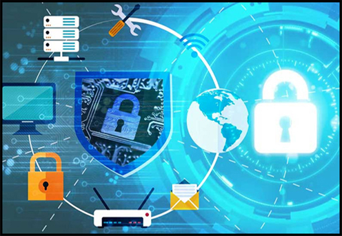
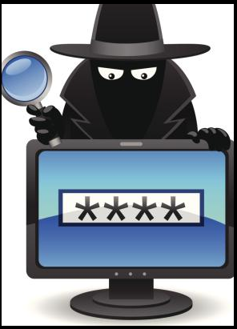
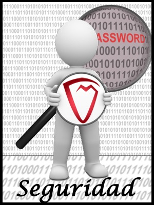
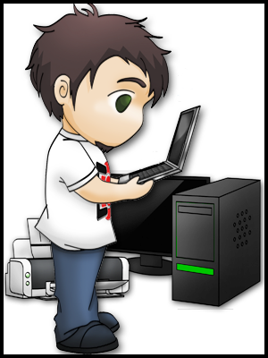

EN ESTA LECTURA SE PODRA COMPRENDER QUE ESTANDARES Y NORMAS INTERNACIONALES SOBRE LA SEGURIDAD INFORMATICA, MAYORMENTE DIRIGIDA A ORGANIZACIONES, ESTAS NORMAAS ISO SON ESTÁNDARES DE SEGURIDAD ESTABLECIDAS POR LA ORGANIZACIÓN INTERNACIONAL PARA LA ESTANDARIZACIÓN (ISO) DE AHÍ SU NOMBRE, Y LA COMISIÓN ELECTROTÉCNICA INTERNACIONAL (IEC) QUE SE ENCARGAN DE ESTABLECER ESTÁNDARES Y GUÍAS RELACIONADOS CON SISTEMAS DE GESTIÓN Y APLICABLES A CUALQUIER TIPO DE ORGANIZACIÓN.
Es recomendable seguir una serie de consejos, prácticas y costumbres para maximizar la seguridad informática en nuestra empresa o en nuestro hogar, por lo tanto, a continuación, le dejaremos algunos consejos, hay que tener en cuenta que estos son los más básicos, lo que mínimamente se deberían tener en cuenta a la hora de hacer uso de algún recurso tecnológico o informático:
Consejos:

- • Mantener actualizado el equipo que se usa con frecuencia tanto su sistema Operativo y aplicaciones para mayor seguridad.
- • Hacer copias de seguridad con frecuencia de nuestra informacion (por si se infecta o pierde algun dato.
- • Instalar software legal (se obtiene garantía y soporte) y evita problemas, al igual que usar equipos seguros (evitar cafes internet).
- • Usar contraseñas fuertes (evitar nombres, fechas, datos conocidos o deducibles, etc.).
- • Utilizar herramientas de seguridad para proteger o reparar el equipo, en caso de alguna falla.
- • No descargar o ejecutar ficheros desde sitios sospechosos o procedentes de correos sospechosos o no solicitados.
- • Analizar con un antivirus todo lo que se descargue (evitando posibles riegos frente a la informacion que se tiene).
- • No facilitar la cuenta de correo (y demas datos personales) a desconocidos o publicarla en sitios que no son seguros.
- • No responder a mensajes falsos o sospechosos, asi se evita que se de informacion de mas a personas con malas inteciones.
- • Observar que la dirección comienza por https (por lo general tiene un candado verde) cuando se esté comprando por internet o ingresando a tu banca.
- • Tener en cuenta que cualquier entidad ya sea bancaria o de otro tipo, nunca pedirá información confidencial por correo electrónico ni por teléfono, si algo es mejor acercarce a la oficina mas cercana.
(Cesar H. Tarazona T, 2018)
Para una mayor seguridad se dará algunas recomendaciones básicas para las personas que hacen uso de la informática, ya sea como dijimos previamente, para el uso del entorno laboral como de casa, pero esta vez de una manera mas especifica y con algun que otro ejemplo... Asi que mucha atencion, por que puede que usted este cometiendo una que otra falla.
- 1. El uso de las claves o contraseñas
Una contraseña segura es la que no se puede encontrar en cualquier diccionario – castellano, catalán, inglés, alemán, … Eso significa que una contraseña que no debe ser fácil de adivinar. En general, las contraseñas más largas son más difíciles de adivinar o descifrar que las contraseñas cortas son.
A continuación, se presenta una lista que se puede utilizar para establecer
contraseñas seguras:
- • Usar una combinación de letras sin sentido: Las mejores contraseñas aparentan ser un puro disparate bajo el punto de vista sintáctico. Por ejemplo, si tomamos la frase: "No esperes que me comporte perfectamente y dibuje esa sonrisa radiante" y utilizamos sólo la primera letra de cada palabra, nuestra contraseña sería “neqmcpydesr”.
- • Incluir una mezcla de caracteres mayúscula, minúscula y numéricos: La contraseña debería incluir alguna letra mayúscula en algún lugar que no fuese el inicio y también algún número.

- • Las contraseñas largas son mejores: La contraseña debería tener al menos 8 caracteres de longitud (en la mayoria de casos requiere esta cantidad y debe ir combinada con letras minusculas o mayúsculas e incluso simbolos).
- •Las contraseñas deben cambiarse periódicamente: Incluso las mejores contraseñas deben cambiarse periódicamente (cada 60 días aproximadamente) para evitar que sean utilizadas mucho tiempo si alguien las descubre.
- • Generar nuevas contraseñasen lugar de reutilizar las mismos una y otra vez: Una contraseña no debería ser utilizada de nuevo por un usuario en un periodo de tiempo inferior a un año.
- • No utilizar un conjunto de caracteres consecutivos en el teclado: Debe evitarse el uso de contraseñas como qwerty, 12345678, o asdfghj. Aunque aparentemente son texto sin sentido, estas secuencias siguen patrones vinculados a la posición de las teclas en el teclado y se pueden romper fácilmente.
Por ultimo recordar que las contraseñas son totalmente secretas Las contraseñas no se
comparten y tienen que estar protegidas. Muchos usuarios escriben sus contraseñas en notas adhesivas pegadas a sus ordenadores o las ponen debajo de sus teclados. ¡Eso no sirve para nada!
- 2. Contar con un antivirus
- Siempre es importante contar con una ayuda extra en caso de que queramos estar bien seguros, por lo tanto, contar con un antivirus en nuestra laptop, es de mucha ayuda. El software antivirus no es siempre efectivo 100%, pero es mejor que no tiene ninguna protección en absoluto. Es muy posible que un usuario que no haya instalado un antivirus en su ordenador piense que no tiene ningún virus, aunque probablemente su equipo esté infectado.
- ¿Cómo funciona este antivirus?
El software antivirus consta de dos partes: el motor de análisis y los archivos de firma, El motor de análisis le indica al software cómo y dónde realizar la búsqueda, y los archivos de firma son esencialmente una base de datos de virus conocidos y sus acciones. El motor de análisis compara los archivos que contiene el ordenador con los virus conocidos que hay en los archivos de firma. El archivo de firma contiene los patrones de virus conocidos, cuando salen nuevos virus los proveedores actualizan su firma, por eso es importante tener un antivirus actualizado.
- 3. Cambiar Configuraciones Predeterminadas
- Siempre es bueno poner su propia “huella” para que en cualquier caso la información que poseamos este segura, por lo tanto…se debe cambiar las configuraciones predeterminadas.
Uno de los errores más habituales es instalar un sistema dejando la configuración por defecto. Las configuraciones predeterminadas a menudo tienen cuentas de administrador predeterminadas y contraseñas que conocen todos los piratas informáticos. Esto es aplicable a routers, hubs, switches, sistemas operativos, sistemas de correo electrónico, bases de datos, servidores web…

- 4. Intentar estar protegido, usando un cortafuego (firewall
- Es muy recomendable usar algún tipo de producto de firewall. Los posibles atacantes exploran constantemente los sistemas que utilizan la mayoría de usuarios en busca de vulnerabilidades conocidas. Los firewalls de red (ya sean basados en software o hardware) pueden proporcionar cierto grado de protección contra estos ataques. Sin embargo, ningún firewall puede detectar o detener todos los ataques, por lo que no es de gran ayuda instalar un firewall si luego ignoramos todas las medidas de seguridad.
- 5. NO abrir ficheros adjuntos desconocidos en correos electrónicos
- Antes de abrir los archivos adjuntos de correo electrónico, debemos estar seguros de conocer el origen de los datos. No es suficiente que el correo haya sido enviado desde una dirección reconocida. El virus Melissa se extendió precisamente porque se originó a partir de una dirección familiar. El código malicioso puede ser distribuido en programas divertidos o tentadores.
Al abrir un archivo adjunto, es importante tener en cuenta el siguiente procedimiento (en solo 3 pasos):
- 1. Tener el firewall activo y un antivirus actualizado (para mayor seguridad y protección de nuestro equipo).
- 2. Guardar el archivo en el disco duro, preferiblemente que no sea donde está instalado el sistema operativo.
- 3. Escanear el archivo con un software antivirus y abrir el archivo.
Debemos tener en cuenta que seguir estos pasos reduce, pero no elimina totalmente la posibilidad de que cualquier código malicioso que haya en el fichero adjunto se extienda desde un ordenador a otros.
- 6. Cuidado con archivos de origen desconocidos
- Igual que la recomendación anterior, si no conoces el destino del archivo o lo que pretendas descargar o instalar, tener cuidado y si es necesario abstenerse de hacerlo, por lo tanto No ejecutar programas de origen desconocido.
Nunca se debe ejecutar un programa a menos que sepa lo ha desarrollado una persona o empresa de confianza. Además, no se deben enviar programas de origen desconocido a amigos o compañeros de trabajo simplemente porque son divertidos - pueden contener lo que se denomina un caballo de Troya.

- 7. Mantener Aplicaciones y SO Actualizados
- Como mencionamos en el punto número, es bueno contar con un antivirus actualizado, pero también se debe mantener actualizadas todas las aplicaciones, incluyendo el sistema operativo Los vendedores de software suelen entregar parches cuando se descubre que un programa tiene una vulnerabilidad. La mayoría de los productos disponen de un método para obtener actualizaciones y parches. Algunas aplicaciones comprueban automáticamente si hay actualizaciones disponibles. Si no es así, es necesario comprobar periódicamente si hay actualizaciones pendientes de instalar.
- 8. Realizar Copias de seguridad
- como dice mi madre es mejor la seguridad que la policía, por eso es recomendable hacer copias de seguridad de los datos críticos (importantes) y crear un disco de arranque ( o backup del equipo, cuando está en óptimas condiciones, en caso de fallo restablecerlo a dicho punto exacto.)
Es conveniente guardar una copia de los archivos críticos en un medio extraíble, y almacenar los discos de copia de seguridad en algún lugar lejos del ordenador. Además, es muy útil crear un disco de arranque para permitir la recuperación de un equipo si hubiese problemas. (Miguel Soriano)
En general, es fundamental estar al día de la aparición de nuevas técnicas que amenazan la seguridad de nuestros equipos informáticos, para asi tratar de evitarlas o de aplicar la solución más efectiva posible.Creo que con estos consejos que te acabamos de dar, puedes disfrutar de un nivel de seguridad adecuado para tu equipo, pero nunca debemos bajar la guardia. Es importante mentalizarnos de los peligros que conlleva las redes de datos y tener una actitud de guardia. Te recomendó siempre desconfiar de cualquier situación (página web, mail, etc..) que te pueda parecer extraña y sospechosa y ante la duda, no arriesgarse.